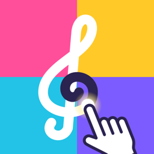

トレーシングマップは、クラシックの名曲に合わせて指で線を描き（デザイン）、だれかが描いた線を音楽に合わせてなぞる（指揮）アプリです。なぞる正確さは点数になり、振動でリズムを感じられます。
投稿したデザイン・タイトル・ユーザーネームは、だれでも見られます。人を傷つける・不快にさせる内容は投稿できません。アプリ内の「通報する」で知らせていただいたものは確認して削除します。「この人の投稿を表示しない」で、特定の人の投稿を見えなくすることもできます。本名など個人が分かる名前は使わないでください。
不具合・ご要望・不適切な投稿の連絡・データ削除のご依頼は、お問い合わせフォームからご連絡ください。
Tracing Map lets you draw lines with your finger along with classical masterpieces (Design), and trace lines someone else drew in time with the music (Conduct). Your accuracy becomes a score, and haptics let you feel the rhythm.
Posted designs, titles and usernames are visible to everyone. Offensive or hurtful content is not allowed. Anything reported with "Report" in the app is reviewed and removed. You can also hide all designs by a particular person with "Hide this designer". Please do not use your real name as your username.
For bug reports, requests, reporting inappropriate posts or data deletion requests, please use our contact form.